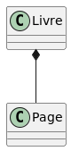

Les Entités Faibles
Définition
Dans le modèle entité-association (E-A), une entité faible est une entité qui ne peut pas être identifiée de manière unique par ses propres attributs seuls. Elle dépend d'une autre entité, appelée entité forte, pour son identification. Une entité faible est souvent utilisée pour représenter des objets qui n'ont pas de signification indépendante sans leur entité forte associée.
Caractéristiques des Entités Faibles
- Dépendance d'Existence : Une entité faible ne peut pas exister sans son entité forte correspondante.
- Clé Partielle : L'identification d'une entité faible nécessite une clé partielle (un ensemble d'attributs propres à l'entité faible) en combinaison avec la clé primaire de l'entité forte.
- Relation d'Identification : Une relation spéciale, souvent appelée relation d'identification, relie l'entité faible à son entité forte.
Exemple
Considérons une base de données pour une bibliothèque. Nous avons deux entités : Bibliothèque et Livre.
- Bibliothèque (entité forte) : Identifiée par un attribut unique,
comme
ID_Bibliothèque. - Livre (entité faible) : Identifié par une combinaison de
ID_BibliothèqueetNuméro_Livre. Un livre n'a pas de signification sans la bibliothèque à laquelle il appartient.
Comparaison avec la Conception Orientée Objet (OO) en UML
En conception orientée objet avec UML (Unified Modeling Language), les concepts d'entités faibles et fortes peuvent être comparés aux relations de composition et d'agrégation.
- Composition : Similaire aux entités faibles, une classe composante ne peut
pas exister indépendamment de la classe composite. Par exemple, une
classe
Pagepeut être une composante d'une classeLivre, et une page n'a pas de sens sans le livre auquel elle appartient. - Agrégation : Contrairement aux entités faibles, une classe agrégée peut
exister indépendamment de la classe agrégante. Par exemple, une
classe
Auteurpeut être associée à plusieursLivres, mais elle peut exister indépendamment de ces livres.
Illustration UML
En UML, une composition est représentée par un losange rempli à l'extrémité de l'association, tandis qu'une agrégation est représentée par un losange vide.
- Composition :
Code
@startuml
Livre *-- Page
@enduml

- Agrégation :
Code
@startuml
Auteur o-- Livre
@enduml

Conclusion
Les entités faibles sont un concept crucial dans le modèle entité-association pour modéliser des objets dépendants d'autres objets pour leur identification. En comparaison, la conception orientée objet utilise des relations de composition pour représenter des dépendances similaires, mais permet également des relations plus lâches avec l'agrégation. Comprendre ces concepts est essentiel pour concevoir des bases de données relationnelles robustes et bien structurées.
Note : Page rédigée en partie avec l'aide d'un assistant IA, principalement
à l'aide de Perplexity AI, avec les LLM GPT-4 Omni et Claude 3.5 Sonnet. L'IA
a été utilisée pour générer des explications, des exemples et/ou des suggestions de
structure. Toutes les informations ont été vérifiées, éditées et complétées par
l'auteur.